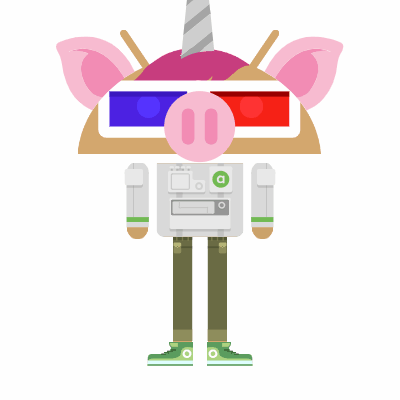

About Me
Name - Cooper
Grade - 9
| Period | Class |
|---|---|
| 1 | Spanish 1P |
| 2 | Biology P |
| 3 | Comp Sci Prn AP |
| 4 | English 1P |
| 5 | Algebra 1P |
| 6 | PE Tennis B |
Hello my name is Cooper Tran and I am 14 years old,
I am a freshman at La Quinta High School and I am looking
forward to going to school here. Some of the things that I
am excited for are the dances, events, and celebrations in
this school. I have four years here so I will make as many
memories that I can before I go off to college and leave this
school behind. I will make every year memorable and fun so that I
will remember it in the future and think about all the good times
here. One of my favorite things about this school is how good the
tennis program is, other things that I admire about this school
are that it is very open and big and that it has good teachers that
teach us things that could be helpful in the future. I have many
hobbies that I do in my freetime and some of them include Some of
them include playing tennis and volleyball, playing games, swimming,
and spending time with friends and family. I am also currently
involved in a few clubs including Kiwins and PAWS. I joined
Kiwins because it looked fun and so I decided to joined because
it is also good for college, and PAWS because it is about
animals and I like animals.
My Hobbies
- Playing tennis
- Playing golf
- Playing volleyball
- Playing games
- DJing for fun
- Swimming
- Sleeping
- Eating
My Top 5 most listened to/favorite songs
- Lil Uzi Vert - XO Tour Llif3
- LSD - Thunderclouds ft. Sia, Diplo, Labrinth
- Alesso - REMEDY
- benny blanco, Halsey & Khalid – Eastside
- Backstreet Boys - I Want It That Way
Favorite Quote
"bruh chill" - me